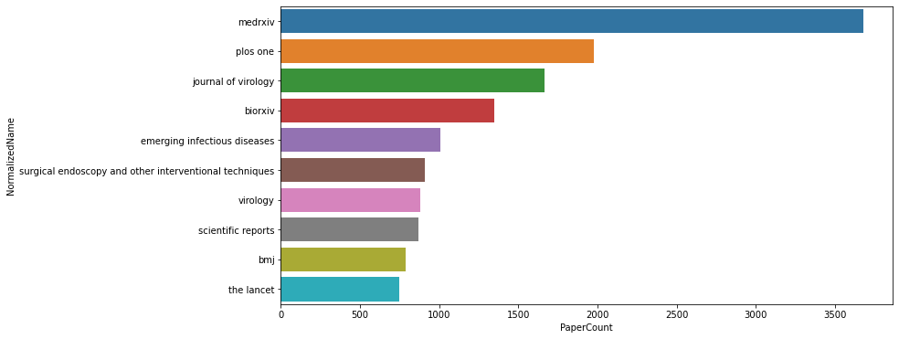
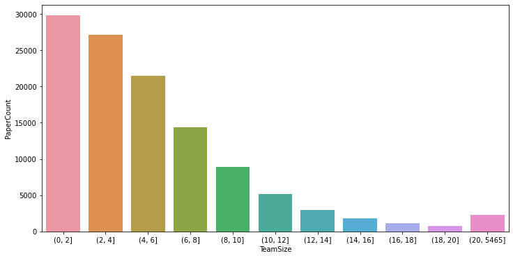
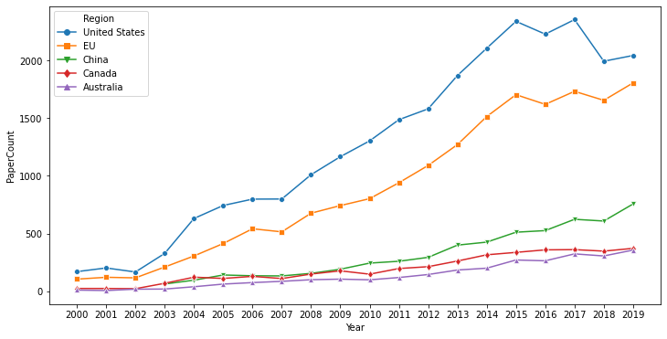
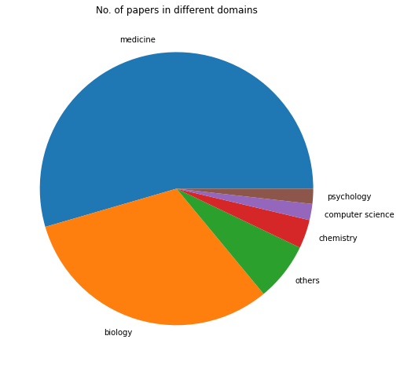
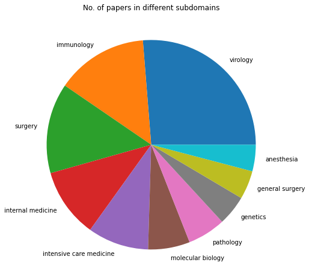
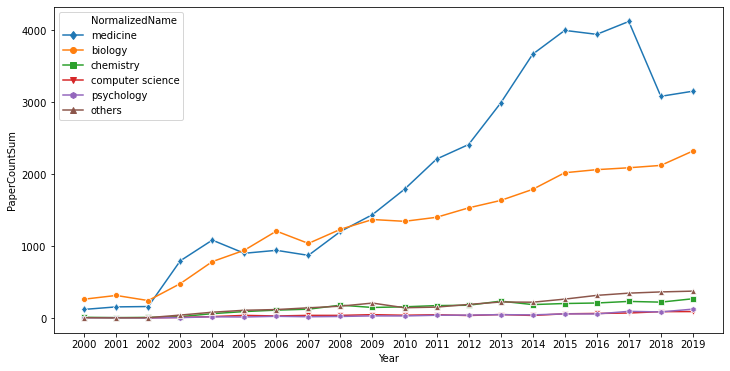
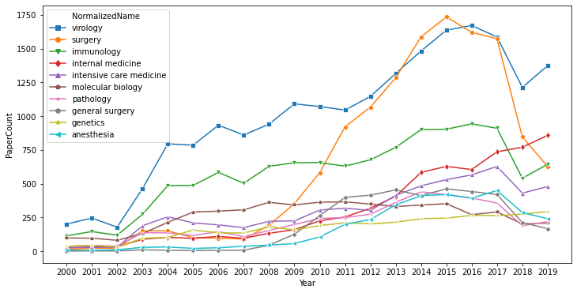

Copyright (c) Microsoft Corporation. All rights reserved.
Licensed under the MIT License.
Data visualization and analysis for Microsoft Academic Graph¶
from utils.PandasMagClass import MicrosoftAcademicGraph
import numpy as np
import pandas as pd
import datetime as dt
import matplotlib.pyplot as plt
import matplotlib.ticker as ticker
import seaborn as sns
import os
root = './data_folder/raw/'
mag = MicrosoftAcademicGraph(root)
# load MAG data: Papers
df_papers = mag.get_data_frame('Papers')
df_papers.head(3)
| PaperId | Rank | Doi | DocType | PaperTitle | OriginalTitle | BookTitle | Year | Date | OnlineDate | ... | Volume | Issue | FirstPage | LastPage | ReferenceCount | CitationCount | EstimatedCitation | OriginalVenue | FamilyId | CreatedDate | |
|---|---|---|---|---|---|---|---|---|---|---|---|---|---|---|---|---|---|---|---|---|---|
| 0 | 342037 | 22085 | 10.1533/9781845694586.3.194 | NaN | detecting virus contamination in seafood | Detecting virus contamination in seafood. | NaN | 2008 | 2008-01-01 12:00:00 | NaT | ... | NaN | NaN | 194 | 211 | 105 | 1 | 1 | Improving Seafood Products for the Consumer | NaN | 2016-06-24 12:00:00 |
| 1 | 392414 | 25423 | 10.1007/978-88-470-0556-3_60 | NaN | il lavaggio broncoalveolare bal in eta pediatrica | Il lavaggio broncoalveolare (BAL) in età pedia... | NaN | 2007 | 2007-01-01 12:00:00 | NaT | ... | NaN | NaN | 621 | 634 | 35 | 0 | 0 | NaN | NaN | 2016-06-24 12:00:00 |
| 2 | 442880 | 24185 | 10.1007/978-1-4684-5823-7_2 | Journal | background paper functions of coronavirus glyc... | Background paper: functions of coronavirus gly... | NaN | 1990 | 1990-01-01 12:00:00 | NaT | ... | 276 | NaN | 5 | 7 | 1 | 4 | 4 | Advances in Experimental Medicine and Biology | NaN | 2016-06-24 12:00:00 |
3 rows × 24 columns
# load MAG data: Paper Author Affiliations
df_paper_author_affiliations = mag.get_data_frame('PaperAuthorAffiliations')
df_paper_author_affiliations.head(3)
| PaperId | AuthorId | AffiliationId | AuthorSequenceNumber | OriginalAuthor | OriginalAffiliation | |
|---|---|---|---|---|---|---|
| 0 | 342037 | 2110117508 | NaN | 7 | F. S. le Guyader | NaN |
| 1 | 342037 | 2135466750 | 71999127 | 2 | R. M. Pintó | University of Barcelona, (Spain) |
| 2 | 342037 | 2149630968 | 71999127 | 1 | A. Bosch | University of Barcelona, (Spain) |
# load MAG data: FieldOfStudy
df_fos = mag.get_data_frame('FieldsOfStudy')
df_fos.head(3)
| FieldOfStudyId | Rank | NormalizedName | DisplayName | MainType | Level | PaperCount | PaperFamilyCount | CitationCount | CreatedDate | |
|---|---|---|---|---|---|---|---|---|---|---|
| 0 | 12843 | 11873 | gravitational singularity | Gravitational singularity | NaN | 2 | 38572 | 36517 | 498012 | 2016-06-24 12:00:00 |
| 1 | 20288 | 11771 | superstring theory | Superstring theory | NaN | 3 | 7425 | 6989 | 196930 | 2016-06-24 12:00:00 |
| 2 | 40700 | 9651 | industrial organization | Industrial organization | NaN | 1 | 320951 | 319290 | 2659089 | 2016-06-24 12:00:00 |
# load MAG data: Paper Field Of Study
df_paper_fos = mag.get_data_frame('PaperFieldsOfStudy')
df_paper_fos.head(3)
| PaperId | FieldOfStudyId | Score | |
|---|---|---|---|
| 0 | 342037 | 31903555 | 0.368951 |
| 1 | 342037 | 34135077 | 0.548833 |
| 2 | 342037 | 86803240 | 0.364040 |
# load MAG data: Journals
df_journals = mag.get_data_frame('Journals')
df_journals.head(3)
| JournalId | Rank | NormalizedName | DisplayName | Issn | Publisher | Webpage | PaperCount | PaperFamilyCount | CitationCount | CreatedDate | |
|---|---|---|---|---|---|---|---|---|---|---|---|
| 0 | 61661 | 10724 | journal of prosthodontics | Journal of Prosthodontics | 1059-941X | NaN | NaN | 2759 | 2759 | 26991 | 2016-06-24 12:00:00 |
| 1 | 255146 | 9259 | synthese | Synthese | 0039-7857 | NaN | http://www.springer.com/11229 | 7074 | 7074 | 76660 | 2016-06-24 12:00:00 |
| 2 | 260102 | 12335 | bmc emergency medicine | BMC Emergency Medicine | 1471-227X | NaN | NaN | 556 | 556 | 5457 | 2016-06-24 12:00:00 |
# load MAG data: Affiliations
df_affiliations = mag.get_data_frame('Affiliations')
df_affiliations.head(3)
| AffiliationId | Rank | NormalizedName | DisplayName | GridId | OfficialPage | WikiPage | PaperCount | PaperFamilyCount | CitationCount | Latitude | Longitude | CreatedDate | |
|---|---|---|---|---|---|---|---|---|---|---|---|---|---|
| 0 | 9507 | 11625 | sangji university | Sangji University | grid.412417.5 | http://www.sangji.ac.kr/ | http://en.wikipedia.org/wiki/Sangji_University | 1479 | 1469 | 13387 | 37.369946 | 127.928612 | 2016-06-24 12:00:00 |
| 1 | 15855 | 12646 | manchester institute of innovation research | Manchester Institute of Innovation Research | NaN | NaN | http://en.wikipedia.org/wiki/Manchester_Instit... | 364 | 356 | 9278 | 53.467999 | -2.236000 | 2016-06-24 12:00:00 |
| 2 | 19722 | 11477 | ateneo de manila university | Ateneo de Manila University | grid.443223.0 | http://www.ateneo.edu/ | http://en.wikipedia.org/wiki/Ateneo_de_Manila_... | 1877 | 1864 | 10674 | 14.638890 | 121.077782 | 2016-06-24 12:00:00 |
# top K journals
# - papers with journals
paper_with_journals = df_papers[df_papers['JournalId'].notnull()]
# - join journals to get journal name
paper_journals = pd.merge(paper_with_journals, df_journals, on ='JournalId', how = 'inner')[['JournalId', 'NormalizedName', 'PaperId']]
# - group by journals and count papers
journals_stats = paper_journals.groupby(['JournalId', 'NormalizedName']).size().to_frame('PaperCount').reset_index().sort_values(by=['PaperCount'], ascending=False)
# - get top 10 journals
journals_stats_top_10 = journals_stats.nlargest(10, 'PaperCount')[['NormalizedName', 'PaperCount']]
journals_stats_top_10
| NormalizedName | PaperCount | |
|---|---|---|
| 7378 | medrxiv | 3681 |
| 5383 | plos one | 1977 |
| 2525 | journal of virology | 1664 |
| 5828 | biorxiv | 1348 |
| 5046 | emerging infectious diseases | 1007 |
| 1250 | surgical endoscopy and other interventional te... | 909 |
| 174 | virology | 882 |
| 5243 | scientific reports | 871 |
| 5140 | bmj | 786 |
| 1324 | the lancet | 749 |
# top K journals: figure
plt.figure(figsize=(12, 6))
ax_topk_journals = plt.subplot()
ax_topk_journals = sns.barplot(x="PaperCount", y="NormalizedName", data=journals_stats_top_10)
plt.show()

# team size average
# - group by paperId to get team size for each paper
paper_team_size = df_paper_author_affiliations.groupby(['PaperId']).size().to_frame('TeamSize').reset_index()
# - get average team size for all papers
paper_team_size_avg = paper_team_size['TeamSize'].mean()
paper_team_size_avg
6.155347014184458
# team size distribution
# - generate paper count per team size
team_size_distribution = paper_team_size.groupby(['TeamSize']).size().to_frame('PaperCount').reset_index()
# - set team size intervals
#bins = [0, 3, 6, 9, 12, 15, 18, 21, 24, 27, 30, 5465]
bins = [0, 2, 4, 6, 8, 10, 12, 14, 16, 18, 20, 5465]
# - generate paper count per team size intervals
team_size_range = paper_team_size.groupby(pd.cut(paper_team_size['TeamSize'], bins=bins)).size().to_frame('PaperCount').reset_index()
team_size_range
| TeamSize | PaperCount | |
|---|---|---|
| 0 | (0, 2] | 29792 |
| 1 | (2, 4] | 27138 |
| 2 | (4, 6] | 21485 |
| 3 | (6, 8] | 14402 |
| 4 | (8, 10] | 8910 |
| 5 | (10, 12] | 5120 |
| 6 | (12, 14] | 2988 |
| 7 | (14, 16] | 1774 |
| 8 | (16, 18] | 1152 |
| 9 | (18, 20] | 775 |
| 10 | (20, 5465] | 2295 |
# team size distribution: figure
plt.figure(figsize=(12, 6))
ax_team_size_distribution = plt.subplot()
ax_team_size_distribution = sns.barplot(x="TeamSize", y="PaperCount", data=team_size_range)
plt.show()

# top K geolocation by past 20 year: load data
df_affiliation_regions = pd.read_table(os.path.join(root, 'AffiliationRegions.txt'), low_memory=False, names=('AffiliationId', 'Name', 'Region'))
df_affiliation_regions.head(3)
| AffiliationId | Name | Region | |
|---|---|---|---|
| 0 | 721619 | Benemérita Universidad Autónoma de Puebla | Mexico |
| 1 | 6615443 | Hydro One | Canada |
| 2 | 8086503 | Sir Salimullah Medical College | Bangladesh |
# top K geolocation by past 20 year
# - filter papers publish year
papers = df_papers[(df_papers.Year >= 2000) & (df_papers.Year <= 2019)]
# - join papers with paper author affiliation
papers_with_affi = pd.merge(papers, df_paper_author_affiliations, on ='PaperId', how = 'inner')[['PaperId', 'Year', 'AffiliationId']]
# - keep only non-empty and distinct rows
papers_with_affi_distinct = papers_with_affi[papers_with_affi['AffiliationId'].notnull()].drop_duplicates()
# - join to get affiliation region
papers_affi_region = pd.merge(df_affiliation_regions, papers_with_affi_distinct, on ='AffiliationId', how = 'inner')[['PaperId', 'Year', 'AffiliationId', 'Region']]
# - eliminate double count when authors in one paper are from different affiliations but in the same country
papers_year_region = papers_affi_region.groupby(['PaperId', 'Year', 'Region']).size().reset_index()[['PaperId', 'Year', 'Region']]
# - group to get paper count per region and year
region_year_papercount = papers_year_region.groupby(['Region', 'Year']).size().to_frame('PaperCount').reset_index().sort_values(by=['PaperCount'], ascending=False)
# - get paper count per region
region_papercount = region_year_papercount.groupby(['Region'])['PaperCount'].sum().reset_index()
# - get region top paper count
top_region_papercount = region_papercount.nlargest(5, 'PaperCount')['Region'].tolist()
# - filter top countries on papers count per year and country
top_region_year_papercount = region_year_papercount[region_year_papercount['Region'].isin(set(top_region_papercount))]
top_region_year_papercount.head(10)
| Region | Year | PaperCount | |
|---|---|---|---|
| 956 | United States | 2017 | 2355 |
| 954 | United States | 2015 | 2340 |
| 955 | United States | 2016 | 2229 |
| 953 | United States | 2014 | 2107 |
| 958 | United States | 2019 | 2044 |
| 957 | United States | 2018 | 1994 |
| 952 | United States | 2013 | 1870 |
| 254 | EU | 2019 | 1806 |
| 252 | EU | 2017 | 1733 |
| 250 | EU | 2015 | 1704 |
# top K geolocation by past 20 year: figure
plt.figure(figsize=(12, 6))
ax_topk_geolocation = plt.subplot()
ax_topk_geolocation = sns.lineplot(x="Year", y="PaperCount", hue="Region", style="Region", markers=['o','s','v','d', '^'], hue_order=top_region_papercount, dashes=False, data=top_region_year_papercount)
ax_topk_geolocation.xaxis.set_major_formatter(ticker.FuncFormatter(lambda x, pos: '{:.0f}'.format(x)))
ax_topk_geolocation.xaxis.set_major_locator(ticker.MultipleLocator(1))
plt.show()

# L0 top Field Of Study distribution
L0_TopN = 5
L0_fos = df_fos.loc[df_fos['Level'] == 0]
paper_L0_fos = pd.merge(L0_fos, df_paper_fos, on = 'FieldOfStudyId', how='inner')
L0_fos_stats = paper_L0_fos.groupby('NormalizedName').agg({'PaperId':['count']})
L0_fos_stats.columns = ['PaperCnt']
L0_fos_stats.sort_values(by=['PaperCnt'], inplace = True, ascending=False)
L0_fos_stats_sorted = L0_fos_stats.reset_index()
L0_fos_stats_sorted.loc[L0_fos_stats_sorted.index >= L0_TopN, 'NormalizedName'] = 'others'
L0_fos_stats_topN = L0_fos_stats_sorted.groupby('NormalizedName').agg({'PaperCnt':['sum']})
L0_fos_stats_topN.columns = ['PaperCntSum']
L0_fos_stats_topN.sort_values(by=['PaperCntSum'], inplace = True, ascending=False)
L0_fos_stats_topN = L0_fos_stats_topN.reset_index()
L0_fos_stats_topN['Percentage'] = L0_fos_stats_topN.PaperCntSum / L0_fos_stats_topN.PaperCntSum.sum()
L0_fos_stats_topN['Percentage'] = pd.Series(["{0:.2f}%".format(val * 100) for val in L0_fos_stats_topN['Percentage']], index = L0_fos_stats_topN.index)
L0_fos_stats_topN
| NormalizedName | PaperCntSum | Percentage | |
|---|---|---|---|
| 0 | medicine | 63225 | 54.51% |
| 1 | biology | 36513 | 31.48% |
| 2 | others | 8008 | 6.90% |
| 3 | chemistry | 3936 | 3.39% |
| 4 | computer science | 2219 | 1.91% |
| 5 | psychology | 2078 | 1.79% |
# L0 top Field Of Study distribution : figure
domains = list(L0_fos_stats_topN['NormalizedName'])
PaperCnt_domain = list(L0_fos_stats_topN['PaperCntSum'])
fig = plt.figure(figsize = (15, 8))
plt.pie(PaperCnt_domain, labels = domains)
plt.title("No. of papers in different domains")
plt.show()

# L1 top Field Of Study distribution
L1_TopN = 10
L1_fos = df_fos.loc[df_fos['Level'] == 1]
paper_L1_fos = pd.merge(L1_fos, df_paper_fos, on = 'FieldOfStudyId', how='inner')
L1_fos_stats = paper_L1_fos.groupby('NormalizedName').agg({'PaperId':['count']})
L1_fos_stats.columns = ['PaperCnt']
L1_fos_stats.sort_values(by=['PaperCnt'], inplace = True, ascending=False)
L1_fos_stats_sorted = L1_fos_stats.reset_index()
L1_fos_stats_topN1 = L1_fos_stats_sorted.nlargest(L1_TopN, 'PaperCnt')
L1_fos_stats_topN1['Percentage'] = L1_fos_stats_topN1.PaperCnt / L1_fos_stats_topN1.PaperCnt.sum()
L1_fos_stats_topN1['Percentage'] = pd.Series(["{0:.2f}%".format(val * 100) for val in L1_fos_stats_topN1['Percentage']], index = L1_fos_stats_topN1.index)
L1_fos_stats_topN1
| NormalizedName | PaperCnt | Percentage | |
|---|---|---|---|
| 0 | virology | 29567 | 26.28% |
| 1 | immunology | 15954 | 14.18% |
| 2 | surgery | 15667 | 13.92% |
| 3 | internal medicine | 12045 | 10.70% |
| 4 | intensive care medicine | 10624 | 9.44% |
| 5 | molecular biology | 7268 | 6.46% |
| 6 | pathology | 6611 | 5.88% |
| 7 | genetics | 5231 | 4.65% |
| 8 | general surgery | 4963 | 4.41% |
| 9 | anesthesia | 4594 | 4.08% |
# L1 top Field Of Study distribution : figure
domains = list(L1_fos_stats_topN1['NormalizedName'])
PaperCnt_domain = list(L1_fos_stats_topN1['PaperCnt'])
fig = plt.figure(figsize = (15, 8))
plt.pie(PaperCnt_domain, labels = domains)
plt.title("No. of papers in different subdomains")
plt.show()

# L0 top Field Of Study distribution by year
L0_topN = 5
L0_fos = df_fos.loc[df_fos['Level'] == 0]
paper_L0_fos = pd.merge(L0_fos, df_paper_fos, on = 'FieldOfStudyId', how='inner')[['NormalizedName', 'Level', 'PaperId']]
papers = df_papers[(df_papers.Year >= 2000) & (df_papers.Year <= 2019)]
paper_year_L0_fos = pd.merge(paper_L0_fos, papers, on = 'PaperId', how='inner')[['NormalizedName', 'Level', 'PaperId', 'Year']]
fos_L0_year_papercount = paper_year_L0_fos.groupby(['NormalizedName', 'Year']).size().to_frame('PaperCount').reset_index().sort_values(by=['PaperCount'], ascending=False)
fos_L0_papercount = fos_L0_year_papercount.groupby(['NormalizedName'])['PaperCount'].sum().reset_index()
top_fos_L0_papercount = fos_L0_papercount.nlargest(L0_topN, 'PaperCount')['NormalizedName'].tolist()
fos_L0_year_papercount.loc[~fos_L0_year_papercount['NormalizedName'].isin(set(top_fos_L0_papercount)), 'NormalizedName'] = 'others'
fos_L0_year_topN = fos_L0_year_papercount.groupby(['NormalizedName', 'Year']).agg({'PaperCount':['sum']}).reset_index()
fos_L0_year_topN.columns = ['NormalizedName','Year','PaperCountSum']
fos_L0_year_topN.head(30)
| NormalizedName | Year | PaperCountSum | |
|---|---|---|---|
| 0 | biology | 2000 | 262 |
| 1 | biology | 2001 | 314 |
| 2 | biology | 2002 | 243 |
| 3 | biology | 2003 | 478 |
| 4 | biology | 2004 | 784 |
| 5 | biology | 2005 | 942 |
| 6 | biology | 2006 | 1208 |
| 7 | biology | 2007 | 1037 |
| 8 | biology | 2008 | 1233 |
| 9 | biology | 2009 | 1369 |
| 10 | biology | 2010 | 1344 |
| 11 | biology | 2011 | 1400 |
| 12 | biology | 2012 | 1531 |
| 13 | biology | 2013 | 1634 |
| 14 | biology | 2014 | 1788 |
| 15 | biology | 2015 | 2019 |
| 16 | biology | 2016 | 2062 |
| 17 | biology | 2017 | 2088 |
| 18 | biology | 2018 | 2121 |
| 19 | biology | 2019 | 2321 |
| 20 | chemistry | 2000 | 10 |
| 21 | chemistry | 2001 | 6 |
| 22 | chemistry | 2002 | 9 |
| 23 | chemistry | 2003 | 19 |
| 24 | chemistry | 2004 | 61 |
| 25 | chemistry | 2005 | 90 |
| 26 | chemistry | 2006 | 110 |
| 27 | chemistry | 2007 | 123 |
| 28 | chemistry | 2008 | 179 |
| 29 | chemistry | 2009 | 147 |
# L0 top Field Of Study distribution by year: figure
plt.figure(figsize=(12, 6))
top_fos_L0_papercount_order = top_fos_L0_papercount.copy()
top_fos_L0_papercount_order.append('others')
ax_topk_fos_L0 = plt.subplot()
ax_topk_fos_L0 = sns.lineplot(x="Year", y="PaperCountSum", hue="NormalizedName", style="NormalizedName", markers=['o','s','v','d', '^', 'h'], hue_order=top_fos_L0_papercount_order, dashes=False, data=fos_L0_year_topN)
ax_topk_fos_L0.xaxis.set_major_formatter(ticker.FuncFormatter(lambda x, pos: '{:.0f}'.format(x)))
ax_topk_fos_L0.xaxis.set_major_locator(ticker.MultipleLocator(1))
plt.show()

# L1 top Field Of Study distribution by year
L1_topN = 10
L1_fos = df_fos.loc[df_fos['Level'] == 1]
paper_L1_fos = pd.merge(L1_fos, df_paper_fos, on = 'FieldOfStudyId', how='inner')[['NormalizedName', 'Level', 'PaperId']]
papers = df_papers[(df_papers.Year >= 2000) & (df_papers.Year <= 2019)]
paper_year_L1_fos = pd.merge(paper_L1_fos, papers, on = 'PaperId', how='inner')[['NormalizedName', 'Level', 'PaperId', 'Year']]
fos_L1_year_papercount = paper_year_L1_fos.groupby(['NormalizedName', 'Year']).size().to_frame('PaperCount').reset_index().sort_values(by=['PaperCount'], ascending=False)
fos_L1_papercount = fos_L1_year_papercount.groupby(['NormalizedName'])['PaperCount'].sum().reset_index()
top_fos_L1_papercount = fos_L1_papercount.nlargest(L1_topN, 'PaperCount')['NormalizedName'].tolist()
top_fos_L1_year_papercount = fos_L1_year_papercount[fos_L1_year_papercount['NormalizedName'].isin(set(top_fos_L1_papercount))]
top_fos_L1_year_papercount.head(3)
| NormalizedName | Year | PaperCount | |
|---|---|---|---|
| 3282 | surgery | 2015 | 1734 |
| 3456 | virology | 2016 | 1671 |
| 3455 | virology | 2015 | 1636 |
# L1 top Field Of Study distribution by year: figure
plt.figure(figsize=(12, 6))
ax_topk_fos_L1 = plt.subplot()
ax_topk_fos_L1 = sns.lineplot(x="Year", y="PaperCount", hue="NormalizedName", style="NormalizedName", markers=['o','s','v','d','^','h','<','.','p','*'], hue_order=top_fos_L1_papercount, dashes=False, data=top_fos_L1_year_papercount)
ax_topk_fos_L1.xaxis.set_major_formatter(ticker.FuncFormatter(lambda x, pos: '{:.0f}'.format(x)))
ax_topk_fos_L1.xaxis.set_major_locator(ticker.MultipleLocator(1))
plt.show()
